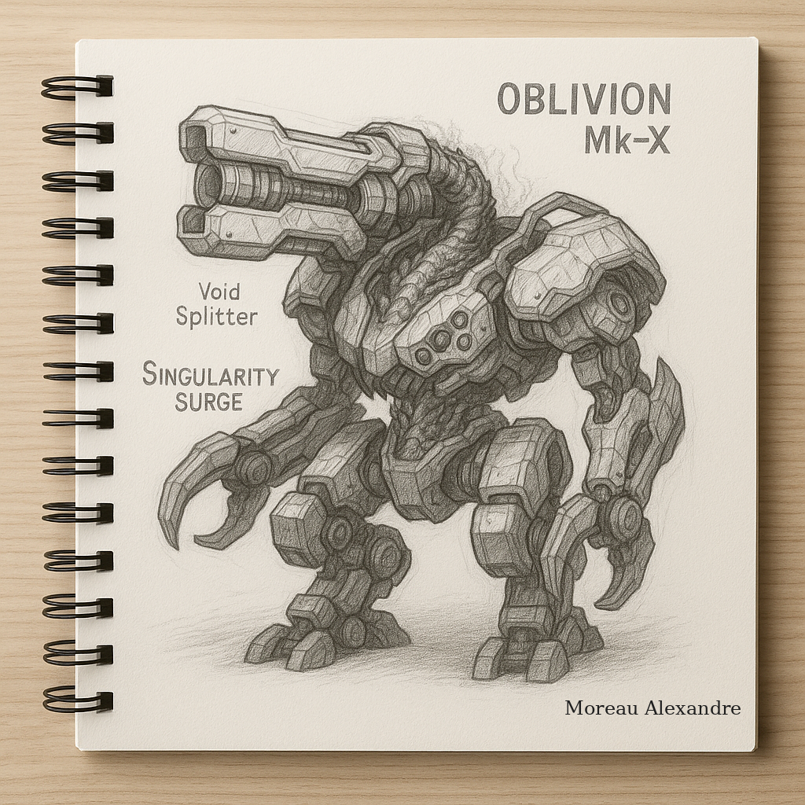

Created by: Moreau Alexandre
Description: OBLIVION Mk-X is a titan-class war robot designed to end conflicts, not just win them. Forged with void energy and advanced meta-carbonium armor, it features the devastating "Void Splitter" and its legendary ability "Singularity Surge", which draws in all enemies within 150 meters into a gravitational trap. Its presence on the battlefield signals absolute annihilation.
